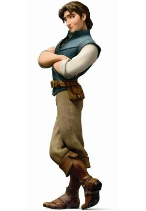
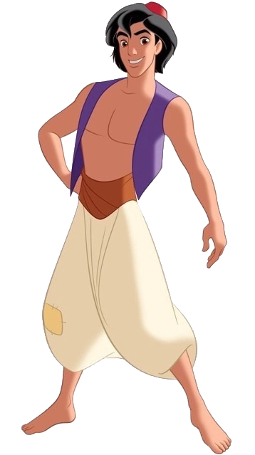
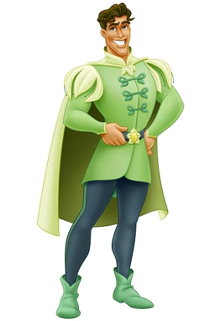
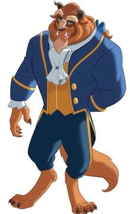

Bienvenido al mundo mágico de las Princesas Disney
Descubre la magia y la aventura con las princesas más queridas de Disney.
Aqui conoceras a tus princesas favoritas con una brebe descripción de ellas y un video de la pelicula resumida.
Princesas aventureras
Ariel
Ariel es la protagonista de la película La sirenita. Es la séptima y más joven hija del rey Tritón la cual la convierte en princesa, gobernante del reino submarino de Atlantica. Vivió gran parte de su vida joven con una admiración de largo plazo, pero prohibida, hacia el mundo humano, y anhelaba algún día experimentar la vida en la superficie.
Pocahontas
Pocahontas es la hija de Powhatan, el jefe de una tribu india de América del Norte. Un día observa la llegada de un grupo de colones ingleses, encabezados por el ambicioso gobernador Radcliff y el valiente capitán John Smith. Acompañada de sus compañeros animales, Pocahontas entabla una amistad con el capitán John Smith. Sin embargo, la ambición de los colonos hace que surjan tensiones entre las dos culturas. Entonces Pocahontas deberá encontrar una manera de lograr la paz entre los dos bandos.
Merida
Es la protagonista de la pelicula Valiente Mérida desafiará lo que se espera de ella en su rol de princesa y demostrará que puede ser tan valiente como los hombres. Sus actos desatarán un caos y más cuando acude a una adivina-bruja (voz de Julie Walters) en busca de ayuda para "cambiar" a su madre. El resultado será de proporciones bestiales y enredos divertidos, más que si fueran los cabellos enredados de la princesa.
Moana
Moana es la protagonista de la pelicula Moana:Un mar de aventuras Una joven aventurera, se embarca en un peligroso viaje, para cumplir con una misión incompleta de sus ancestros. Durante su viaje conocerá a su héroe, un semidiós legendario llamado Maui, y juntos recorrerán el oceáno en un viaje lleno de misterios y aventuras.
Rapunzel
Rapunzel es la protagonista principal de la película del 2010 de Disney, Enredados. Ella es la princesa de Corona, conocida por su largo, magico y dorado cabello. Siendo una niña, Rapunzel fue raptada por Gothel y encerrada en una torre remota por dieciocho años, en los cuales quedó fascinada con un fénomeno relacionado con las "luces flotantes", las cuales sólo aparecían en su cumpleaños.
Mulan
Mulan Es una joven bella, valiente,autosuficiente, y no se centra en el matrimonio. Asimismo, no se ajusta a las expectativas de una muchacha china de la época: elegante, discreta, y tranquila. En lugar de eso, es torpe,franca e independiente. Al comienzo de la primera película, le es difícil adaptarse, pensando que nunca va a traer honor a su familia. Como sigue la historia, empieza a ganar más confianza en sí misma y, después de salvar a China, por fin se ve a sí misma como la persona que ella siempre quiso ser y el honor que ha traído a su familia. Su coraje, inteligencia, determinación y extraordinario ingenio la ayuda a través de sus aventuras, mientras mantiene su respeto por los demás.
Jasmin
la Princesa Yasmín estaba a unos pocos días de su decimoquinto cumpleaños. Ella es la hija del Sultán, quien quería, como establecía la ley, que Yasmín eligiera un príncipe para casarse, pero ella se negaba. Yasmín es una mujer joven y vigorosa, con una mente propia. Puede ser testaruda e impetuosa. Tiene un suministro inagotable de fuerza de voluntad, y es muy inteligente y resolutiva, pero a veces puede ser arrogante. Aun así, Yasmín tiene un gran corazón y no duda en ayudar a quien la necesite.
Tiana
Originalmente la cenicienta no es una princesa se convierte al casarse con un principe. Es una joven camarera que sueña con ser dueña de su propio restaurante algún día. Durante una noche de una fiesta de disfraces, ella se encuentra con el Príncipe Naveen, quien ha sido convertido en rana por un hechicero, y le dice que si le besa se convertirá de nuevo en humano. Sin embargo, tras darle un beso, es Tiana quien se convierte en rana. Los dos, convertidos en ranas, van en busca de alguien que rompa el hechizo.
Elsa
En el exterior, Elsa parece inteligente, justa y reservada, pero en la realidad, vive con temor ya que guarda un gran secreto - nació con el poder de crear hielo y nieve. Es una hermosa habilidad, pero también extremadamente peligrosa. Atormentada por el momento en el que su magia casi mató a su hermana menor Anna, Elsa se ha desolado, pasando cada minuto tratando de suprimir el crecimiento de sus poderes. Sus difíciles emociones desencadenan la magia, accidentalmente creando un invierno eterno que no puede detener. Teme que se convierte en un monstruo y nadie, ni siquiera su hermana, puede ayudarla.
Princesas Romanticas
Cenicienta
Originalmente la cenicienta no es una princesa se convierte al casarse con un principe. Cenicienta es inicialmente una sirvienta en su casa y es constantemente objeto de burla por su malvada madrastra Lady Tremaine y sus dos hermanastras. Aunque ella es maltratada y humillada, mantiene la esperanza a través de sus sueños. Ella es fiel a la idea de que algún día sus deseos de felicidad se harán realidad. Cuando su malvada madrastra y sus dos malvadas hermanastras le impiden ir al baile, su corazón es destrozado y se siente sola. Sin embargo, su hada madrina aparece y le devuelve la esperanza. Cenicienta es de carácter fuerte y determinado, cuando la invitación al baile real llega, ella hace todo lo que pueda para persuadir a su madrastra que ella tiene todo el derecho a asistir. Ella se presenta en la película como una heroína simpática, bien intencionada, muy trabajadora, y positiva.
Blanca Nieves
Blancanieves es una princesa de nacimiento que se ve forzada a la servidumbre por su malvada madrastra, la Reina Grimhilde. Ella es inocente y un poco ingenua, pero nunca pierde la fe en su anhelo de que el verdadero amor algún día llegará a buscarla. Ella sigue siendo alegre y amable, sin importar lo mal que su malvada madrastra, la Reina Grimhilde, la trate. Ella es una optimista nata, que siempre va a ver la botella medio llena, no importa lo sombrías que las cosas parezcan. Una soñadora en silencio, le encanta ayudar a los menos afortunados que ella y nunca juzga a la gente. Con una naturaleza amable, gentil y femenina, que sigue su corazón y hace lo que ella siente que es correcto incluso si eso puede traerle problemas
Bella
Originalmente Bella no es una princesa se convierte al casarse con un principe. Bella es una muchacha que vive en la campiña francesa con su padre, un inventor. Es una hermosa campesina que le gusta leer y seguir las aventuras de su propia imaginación. No es tímida y no tiene miedo de decir lo que piensa, sobre todo en situaciones difíciles, aunque puede ser un poco vacilante cuando está nerviosa. Es muy compasiva, y cuida de los necesitados. Puede ser terca y siempre trata de proteger a la gente que realmente ama. También es muy paciente con los demás. Una soñadora y una verdadera amante de la fantasía y la aventura, Bella es una astuta inconformista para su tiempo en muchos aspectos
Aurora
La Princesa Aurora es la hija única del Rey Estéfano y la Reina Flor. Aurora es retratada como una chica amable, juguetona, tímida, gentil, y bastante ingenua, que ama a los animales y podía hablar con ellos. Su rasgo de personalidad más destacado es su pasión por el amor y es vista como una romántica empedernida. Las hadas buenas del reino la han bendecido con la belleza y el don del canto. Ella se siente sola la mayor parte de la película, ya que está aislada del castillo de su padre dónde ha nacido en una cabaña en el bosque llamada la Cabaña del Leñador con sus tres hadas buenas y madrinas Flora, Fauna y Primavera.
Anna
Valiente e inocente, la princesa Anna se embarca en una aventura congelada para salvar a su reino de un invierno eterno y reencontrarse con su hermana Elsa en Frozen. Anna es la princesa del reino llamado Arendelle, y es hermana menor de la reina Elsa, quién es heredera al trono y posee el don de crear hielo y nieve. La intrépida y optimista Anna emprende un viaje épico, junto con el alpinista extremo Kristoff y su leal reno Sven, para hallar a su hermana luego de que sus fríos poderes condenaran a su pueblo a un invierno eterno. En una carrera por salvar el reino de la destrucción, Anna y Kristoff se topan con místicos trols, un divertido muñeco de nieve llamado Olaf, temperaturas extremas y magia en cada rincón
Ya conociste un poco más de tus princesas favoritas ahora conozcamos un poco de los príncipes que lograron encantar estas princesas.
Príncipes aventureros
Príncipe Eric
Eric es valiente y protector, y está dispuesto a enfrentarse a cualquier desafío por las personas que ama como Ariel. Este príncipe es leal, gran compañero y desinteresado.
Príncipe Jonh Smith
John Smith es el interés romántico de Pocahontas en su película. Este soldado inglés es cordial y amable. Se acerca a los demás de una forma respetuosa y educada. Este personaje siempre mantiene la calma y posee una mente brillante.

Príncipe flynn Rider
Flynn es un joven aventurero y simpático,Originalmente no es un príncipe pero al casarse con Rapunzel. que tiene un gran sentido del humor y es. A pesar de identificarse como un ladrón, a lo largo de la película muestra que tiene un gran corazón y que está dispuesto a arriesgar todo por amor.
Príncipe Li Shang
El General Li Shang es un apuesto y valiente joven que lucha por su país. En la fatídica guerra de China contra los Hunos pierde a su padre, pero gana al amor de su vida, Mulan.

Príncipe Aladdín
Aladdin es un personaje que al principio no es un príncipe, al que le encanta imaginar todas las posibilidades que existen en la realidad y en la imaginación. Es espontáneo, creativo y generalmente mira en el lado positivo de las cosas.5
Príncipe Naveen
El Príncipe Naveen es un hombre relajado y de alma alegre. Adora la música, en especial el jazz, y lleva un estilo de vida despreocupado. En la película La princesa y el sapo demuestra ser una persona de buenos valores.
Príncipes Romanticos
Príncipe Henry
Henry es un príncipe de buenos modales. Le gusta la aventura y vivir al aire libre, más sabe que tiene responsabilidades reales. No quiere disgustar a su padre, pero si quiere casarse, desea hacerlo por amor. Cuando conoce a Cenicienta, decide desposarla, pero al marcharse corriendo, no llego a conocerla y con el zapato de cristal en sus manos, decide buscar a la propietaria de ese zapatito hermoso.

Príncipe Florian
El es un joven príncipe quien se enamora de Blancanieves al oírla y verla por primera vez.
Prínicpe Adam
Fue un príncipe joven y apuesto que se convirtió en alguien cruel y egocéntrico antes de que una hechicera lo transformara en una horrible Bestia . Ahora está atrapado en el castillo hasta que aprenda a amar a los demás y ser digno de su amor, algo que romperá la maldición como lo hizo Bella.
Príncipe Felipe
Está comprometido con la Princesa Aurora desde pequeño. Al crecer, pasea por el bosque con su caballo Samson y escucha a una muchacha cantando. Al oír esa hermosa voz, cabalga velozmente hasta que llega hasta donde la chica, quien resulta ser una hermosa joven de la que se enamora sin imaginar que es Aurora.
Ten un poco más de información a través de estas tablas.
| Princesa | Película | Año de Estreno |
|---|---|---|
| Ariel | La sirenita | 1989 |
| Pocahontas | Pocahontas | 1955 |
| Merida | Valiente | 2012 |
| Moana | Moana | 2016 |
| Rapunzel | Enredados | 2011 |
| Mulan | Mulan | 1998 |
| Jasmin | Aladdin | 1992 |
| Tiana | La princesa y el sapo | 2009 |
| Elsa | Fronzen | 2013 |
| Cenicienta | La Cenicienta | 1950 |
| Blanca Nieves | Blanca Nieves y los 7 enanitos | 1937 |
| Bella | La bella y la bestia | 1991 |
| Aurora | La Bella durmiente | 1959 |
| Anna | Frozen | 2013 |
| Príncipe | Película | Año de Estreno |
|---|---|---|
| Eric | La sirenita | 1989 |
| Jonh Smith | Pocahontas | 1955 |
| Flynn Rider | Enredados | 2011 |
| Li Shang | Mulan | 1998 |
| Aladdin | Aladdin | 1992 |
| Naveen | La princesa y el sapo | 2009 |
| Henry | La Cenicienta | 1950 |
| Floren | Blanca Nieves y los 7 enanitos | 1937 |
| Adam | La bella y la bestia | 1991 |
| Felipe | La Bella durmiente | 1959 |